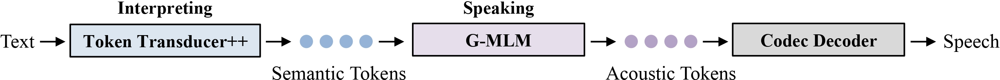

Abstract
We propose a novel two-stage text-to-speech~(TTS) framework with two types of discrete tokens, i.e., semantic and acoustic tokens, for high-fidelity speech synthesis. It features two core components: the Interpreting module, which processes text and a speech prompt into semantic tokens focusing on linguistic contents and alignment, and the Speaking module, which captures the timbre of the target voice to generate acoustic tokens from semantic tokens, enriching speech reconstruction. The Interpreting stage employs a transducer for its robustness in aligning text to speech. In contrast, the Speaking stage utilizes a Conformer-based architecture integrated with a Grouped Masked Language Model~(G-MLM) to boost computational efficiency. Our experiments verify that this innovative structure surpasses the conventional models in the zero-shot scenario in terms of speech quality and speaker similarity.
